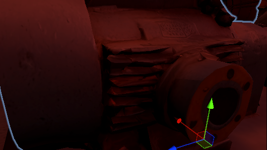
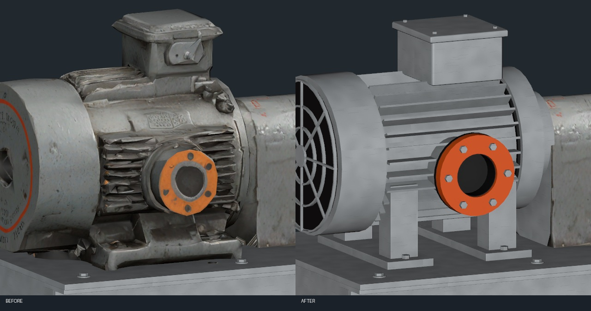
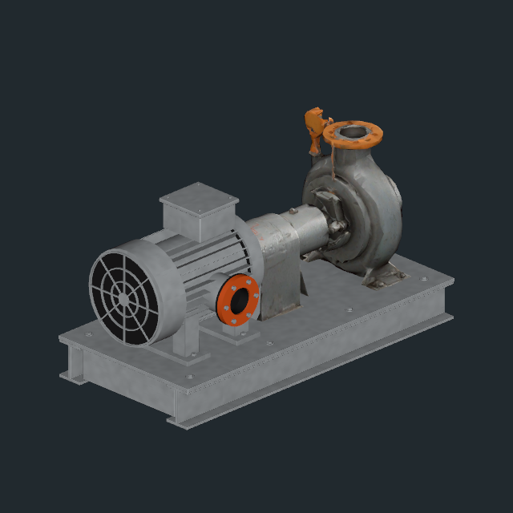
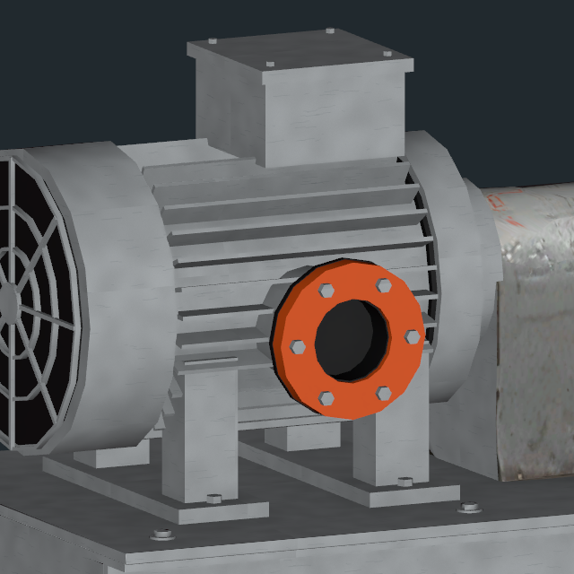

2026-11-11 · 작성자 송예찬
사용자가 제공한 「스크린샷 2026-11-11 154123」의 구겨진 방열핀과 원형 연결부를 대상으로 했다. 이전 검수에서 생성 형상의 찌그러짐을 마모로 분류해 남긴 판단을 정정한다. 이 부위는 회전·노멀 수정만으로 해결되지 않아 모터 구간을 재제작했다.

왼쪽: 이번 보수 직전. 오른쪽: 재제작 후. 동일한 카메라·검수용 임시 조명으로 비교했다.

기존 모터 구간을 제거하고 원통 하우징, 일정한 두께의 직선 방열핀26개, 원형 측면 플랜지와 가스켓·6개 볼트, 상단 단자함·덮개, 후면 팬 가드 및 지지대를 제작했다. 새 부품은 회색 도장 금속·주황색 플랜지·어두운 내부 재질을 명시적으로 연결했다. 연결부 안쪽의 겹치는 원통면도 분리했다. 펌프 전단의 본체/텍스처와 이전 수평 받침대는 유지했다.


| 항목 | 결과 |
|---|---|
| 적용 | B2 C02 5개 / E01 3개 / E03 2개, 총10개 |
| 배치·충돌체 | 194개 루트 위치·회전·크기 및 충돌체194개 보존, 수정10개 접지/외곽 유지 |
| 메시 | 정점 접합 기준 열린 경계·과잉 연결·퇴화 면0. LOD 참조/재질 슬롯/빈 메시 검증 오류0 |
| 삼각형 | LOD0 10,000→12,000 / LOD1 4,000→5,500. 형상을 보존하기 위해 증가했다. |
| 모델 파일 | 기존 공유 FBX와 GUID를 갱신, 파일 추가0. 현재 0.615MiB |
| 재질 | 신규 텍스처0, 소형 재질2개 추가. 슬롯2→4로 펌프당 최대2개 재질 패스 증가 |
| 읽기/쓰기 | 두 메시 모두 꺼짐 |
이번 씬 변경은 Renderer20개의 재질 연결뿐이며 오브젝트 추가/삭제0, Transform·Collider·LODGroup 변경0이다. 기존 FBX의 GUID를 유지했다. 다른 층·Player·Animator·게임 C#·앞서 보수한 다른3종 프랍은 그대로다. 커밋·push는 하지 않았다. 에디터 형상/구조 검수이며 빌드 FPS 측정 결과는 아니다.
제작·검증 원본: SourceAssets/CoolingPumpMotorRepair/. 원본 복구 백업: Documents/Codex/Backups/AfterSeconds_CoolingPumpMotor_20261111/. 이전 CoolingPumpRepair의 전체 Apply/rebuild를 실행하면 이 형상으로부터 되돌아가므로 재실행하지 않는다.